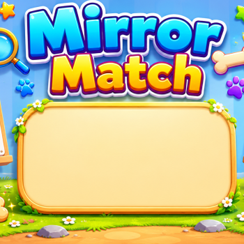

Grade - 1, 2
Activity - Mirror Match
Computational Thinking Skills - Pattern Recognition, Spatial Reasoning, Visual Reasoning

Objective - Identify symmetry and mirror patterns by colouring shapes so that one side matches the reflected pattern on the other side.